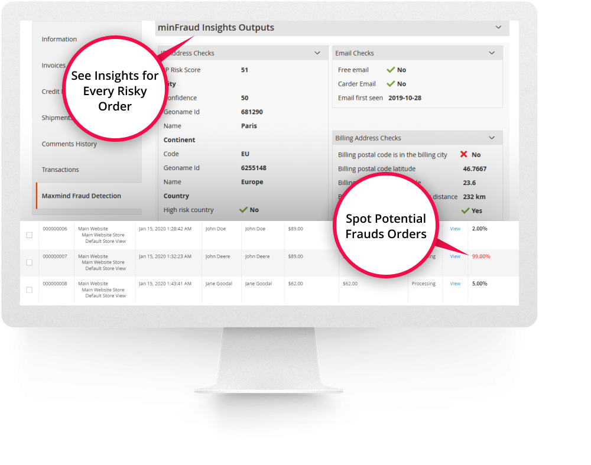
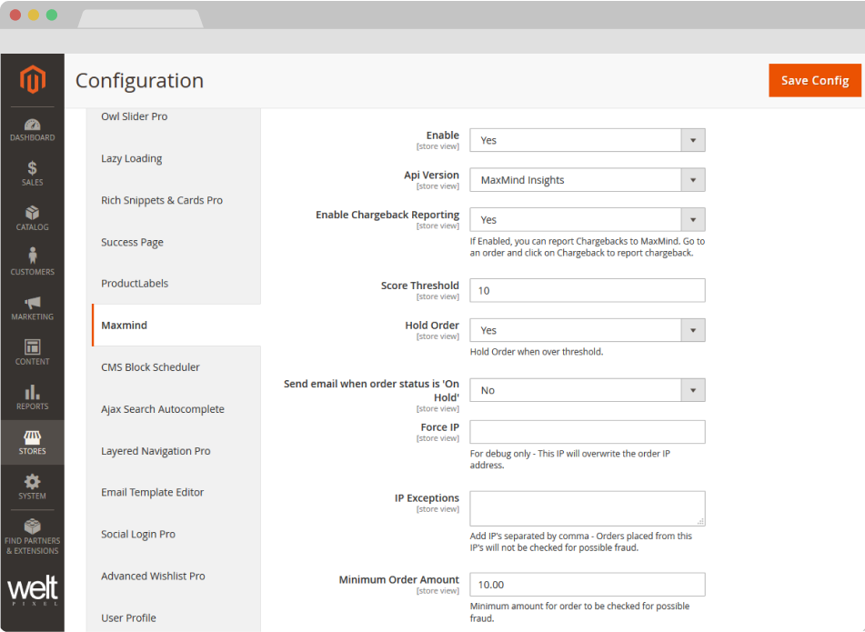
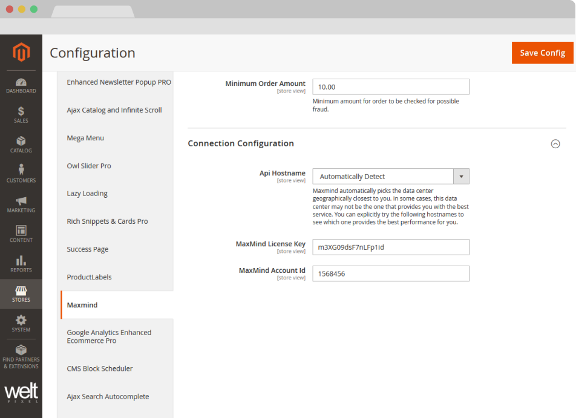
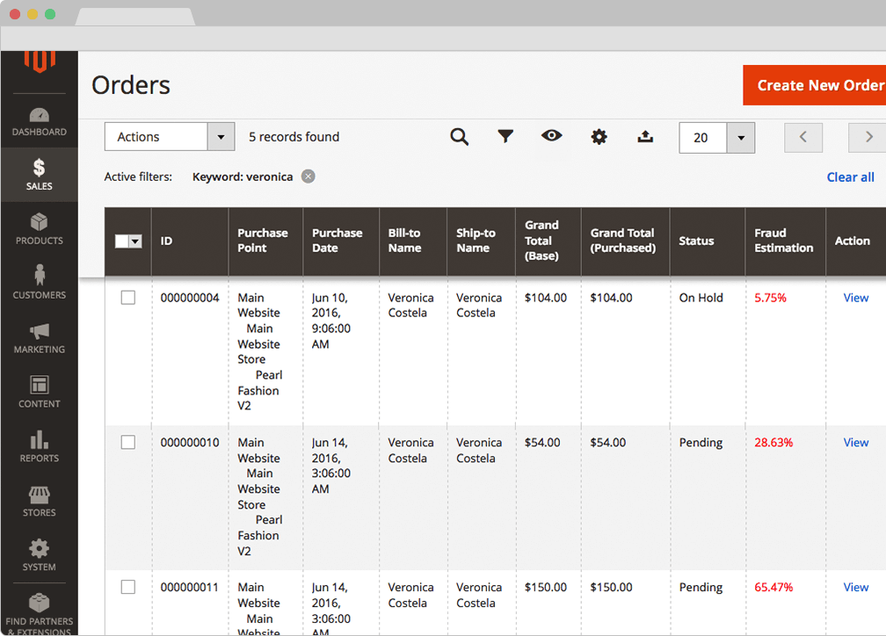
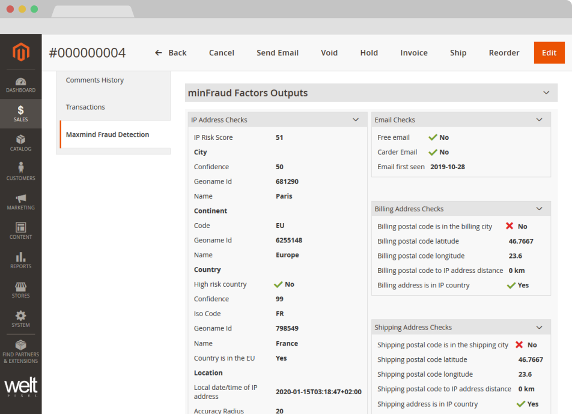

MAXMIND FRAUD PREVENTION MINFRAUD FOR MAGENTO2.
About MaxMind Fraud Prevention minFraud For Magento 2.
Detect fraud and minimize risks, with this extension your Magento orders will be evaluated and receive a risk score, using MaxMind's Score, Insights and Factors Services, depending on which best suits your business.
Fraud detection is very important, and our Fraud Prevention and Risk Scoring module for Magento 2 will assist you in monitoring, detecting, and preventing fraud in your online store. This extension uses real-time fraud analysis from Maxmind , an industry-leading provider of IP intelligence and online fraud detection tools. The module determines the chance that a transaction is fraudulent based on multiple factors, including whether an online transaction comes from a high risk IP address, high risk email, high risk device, or anonymizing proxy.
The extension also comes with the possibility of reporting Chargebacks, which helps MaxMind detect about 10-50% more fraud specifically tailored to your company.
The MaxMind Fraud Prevention minFraud extension for Magento 2 is recommended by MaxMind.
How does the minFraud service work?Separate from this extension, a Maxmind account is necessary, you can create one here. The module integrates Maxmind Risk Scoring service (from only $0.005 an order) with your Magento 2 store and identifies risky orders to be held for further review. For example, what if an order was placed from a computer in a suspicious country but the shipping address is in Germany? If this happens you should be able to identify those kind of orders. Suspicious orders will be flagged automatically by our extension. All your orders will be verified and scored for fraud risk using MaxMind minFraud service. Every order will get a score up to 100, which is the higher risk of fraud.
For example, what if an order was placed from a computer in a suspicious country but the shipping address is in Germany? If this happens you should be able to identify those kind of orders. Suspicious orders will be flagged automatically by our extension. All your orders will be verified and scored for fraud risk using MaxMind minFraud service. Every order will get a score up to 100, which is the higher risk of fraud.
Easy integration in your Magento 2 storeThe module installs into your Magento store without having to modifying your code. Order scores are displayed in the summary Sales Order view and detailed information about the order score (and elements that contributed to it) is visible in each individual order.
Easy to useAfter installation you just need to create a MaxMind account, fill in the credentials and your orders will be reviewed for fraud detection based on the risk threshold you set in admin, all orders which get a score above the threshold will appear in red and placed on hold for further review.
Features:- Prevent fraud by automatically placing On Hold orders with high score risk
- Obtain important risk information about orders such as the IP address, email, device, or anonymizing proxy based on the selected MinFraud Service used
- Instant fraud score check when order is placed
- Cut costs by choosing specific Payment Methods on which you'd like the MaxMind scoring to apply
- Granular Device Tracking capabilities
- Defer JS option for increased performance
- Scoring available via all API versions for backend/Magento Admin orders
- Risk Score Reasons integration (minFraud Factors only)
- Minimize Chargeback costs
- Customisable fraud score limit, set your own fraud score limit
- Check only orders with a specified minimum order ammount
- Automatic Email notification when an order is placed on hold due to high risk score.
- IP exceptions, do not check fraud score from excepted IPs.
- Force IP, possibility to use MaxMind services on local installations.
- Includes support for the new Maxmind API, as well as for the Legacy API.
- Includes the possibility of reporting Chargebacks, in order to help MaxMind detect more fraud for your company.
HOW TO INSTALL
This extension is installed via Composer, which is the official and only supported installation method.
Step 1: Prerequisites
- Ensure your Magento version is compatible (2.3.0 - 2.4.8 and all Security Patches)
- Install on a testing/development environment first
- Set Magento to developer mode before installation
- Make sure you have Composer installed on your server
php bin/magento deploy:mode:set developer
Step 2: Access Composer Configuration
Head into the Downloadable Products section of your weltpixel.com account. This is where you'll be able to see your Composer Configuration Commands.
You'll need to have Composer installation enabled for your account. If you don't see the Composer Configuration Commands, please contact our support team.
Step 3: Configure Repository
Run the generated commands from your account. Example commands:
composer config repositories.weltpixel composer https://weltpixel.repo.packagist.com/your-id/
composer config --global --auth http-basic.weltpixel.repo.packagist.com token your-token
These commands will provide you access to the WeltPixel repository. Replace 'your-id' and 'your-token' with the actual values from your account.
Step 4: Install via Composer
Run the following command in your Magento root directory:
composer require weltpixel/maxmind
Step 5: Enable and Setup
Run the following commands:
php bin/magento setup:upgrade php bin/magento setup:di:compile php bin/magento setup:static-content:deploy -f
Step 6: Cache Management
Flush any caches:
php bin/magento cache:flush
Step 7: Production Mode
If your store was in production mode, switch it back:
php bin/magento deploy:mode:set production
Wooohooo! The extension is now installed on your Magento store! Congrats!
How to Upgrade the Extension
- Step 1: Run: composer update (for the package)
- Step 2: Run setup commands: php bin/magento setup:upgrade, php bin/magento setup:di:compile, php bin/magento setup:static-content:deploy -f
- Step 3: Flush cache: php bin/magento cache:flush
CONFIGURATION.
In Admin > WeltPixel > Maxmind configuration > General Configuration, you can find the following settings:
- Enable [Yes / No] - Enable/disable the Maxmind module.
- Enable for Payment - Choose the Payment Methods for which you'd like the MaxMind scoring to apply. Hold CTRL to select multiple methods.
- minFraud API Service - Select the right Maxmind minFraud Service for your business. For more details about the available services, check out the official Maxmind minFraud Service page.
- Enable Risk Score Reasons (minFraud Factors only) - Enable this functionality to display Risk Score Reasons for scored orders. This allows for more insights into why a particular score was given by Maxmind. Works only with the Factors API.
- Enable Chargeback Reporting - If Enabled, you can report Chargebacks to Maxmind. Go to an order and click on Chargeback to report chargeback.
- Enable Device Tracking - If Enabled, Maxmind Device tracking javascript snippet is added to the pages. More info on Device Tracking Add-on for minFraud Services.
- Initialize Device Tracking Script on - Choose specific pages on which you'd like to enable the Device Tracking functionality. Device Tracking is enabled by default on the Checkout, if the main option is set to Yes.
- Score Threshold - Set the risk score threshold. All orders which receive a Maxmind Score above this threshold will appear in red (in the Order Grid and on the Order Page) in order to get your attention.
- Hold Order [Yes / No] - Allows you to place on hold all orders that have been scored above the Score Threshold in order to allow you to decide upon the next steps.
- Disable MaxMind checks for Admin Order [Yes / No] - Set this option to No to ensure orders placed via the Magento Admin are also scored by the selected Maxmind API.
- Send email when order status is 'On Hold' [Yes / No]
- Email address - Email address for notifications
- Email Subject - Customize email subject
- Email Content - Customize email content
- Force IP - For debug only, this IP will overwrite the order IP address. Leave this field blank when you are using the module on a live store. If you are testing on a local installation or in an environment using a private IP, make sure to enable this option and add here a Public IP address in order to be able to use Maxmind Services on local environments.
- IP Exceptions - Add IPs separated by comma. Orders placed from these IPs will not be checked for possible fraud.
- Minimum Order Amount - Minimum amount for order to be checked for possible fraud. All orders above this threshold will be checked for possible fraud. Leave the field blank if you want all orders to be checked.
- Defer the Maxmind JS - If enabled, the attribute “defer“ is added to the Maxmind JS script in order to speed up page loading.


CONNECTION CONFIGURATION.
In Admin > WeltPixel > Maxmind configuration > General Configuration, you can find the following settings:
- Api Hostname - MaxMind automatically picks the data center geographically closest to you. In some cases, this data center may not be the one that provides you with the best service. You can explicitly try the following hostnames to see which one provides the best performance for you.
- MaxMind License Key - The license key obtained from maxmind.com. In case you're using the Legacy minFraud services, please ask for this to be enabled on your MaxMind account.
- Disable cURL Server Certificate Check - For temporary server certificate issue. You can set cURL to accept any server(peer) certificate.
How to use.
In Admin > Sales > Orders > you can check in the last column “Fraud Estimation” the risk score othe every order.
If an order has a risk score above the set threshold, you can view the score with red color. Depending on settings set, the order are automatically set ON HOLD


In Admin > Sales > Orders >View > Maxmind Fraud Detection you can check the entire report data.
In this tab you can find more information (depending on your MaxMind API service) about:
- Risk score - The risk score assigned to the order.
- Chargeback Reporting - Ability to report the current order as a Chargeback.
- MaxMind Account information - Information about your account (Request type, ID, remaining credit).
- IP Address Checks - Information regarding the location where the order was placed.
- Email Checks - Information about the email address used.
- Billing/Shipping Addres checks - Information about billing and shipping addresses used.
- Subscores Checks - Numerical evaluation of the risk associated with each factor.
- minFraud Inputs - A series of inputs sent to MaxMind in order to calculate the risk score.
All this information is visible for the administrator. Based on this information you can decide what to do with the orders which are above the threshold score and are set automatically ON HOLD, if the Hold order option is set to Yes.
Note: There may be certain pieces of information missing in this section. This is very likely because Magento does not store this information, and is therefore unable to send it to MaxMind.
Change Log.
What's new in v.1.16.0 - January 7, 2026
- Giving back: As a celebration of over 10 years of activity within the Magento 2 ecosystem, and as a way to give back to the community, a number of WeltPixel extensions (both FREE and paid) have officially gone fully Open Source via public Github repositories. Find the full list on Github.
- New Feature: Introduced composer as the official and singular installation method for all WeltPixel products. Previously, this was only available for the PRO version of the Google Analytics 4 extension, as well as the Marketing Suite Pro.
What’s new in v.1.15.9 - October 28, 2025
- Magento Compatibility: Introduced compatibility with the latest released Magento 2 Security Patches - Magento 2.4.8-p3, Magento 2.4.7-p8, Magento 2.4.6-p13, Magento 2.4.5-p15 & Magento 2.4.4-p16.
- New Feature: Added improvements to Magento Admin messaging around Product Updates to ensure visual clarity for users not running the latest product release.
- New Feature: Added .ddev.site and .cloudwaysapps.com as accepted development domains. These domains will no longer require additional license keys.
What’s new in v.1.15.7 - September 2, 2025
- New Feature: Introduced a new integration with Risk Score Reasons for the minFraud Factors API. This new integration allows for displaying additional information from Maxmind related to the reasoning behind a transaction's Risk Score, directly in the Magento Admin dashboard. Requires the Factors API to be utilized.
- Magento Compatibility: Introduced compatibility with the latest released Magento 2 Security Patches - Magento 2.4.8-p2, Magento 2.4.7-p7, Magento 2.4.6-p12, Magento 2.4.5-p14 & Magento 2.4.4-p15.
- Added additional validations to prevent Magento Admin errors when the Backend extension could not fetch the current server user due to permissions issues.
- Added adjustments to frontend templates to adhere to Magento Best Practices regarding XSS validations.
- Fixed a CSP issue that would sometimes prevent orders from being created via the Magento Admin.
What’s new in v.1.15.3 - June 20, 2025
- Magento Compatibility: Introduced compatibility with the latest Magento 2.4.8-p1, 2.4.7-p6, 2.4.6-p11 & 2.4.5-p13 Security Patches releases. Upgrade ASAP to keep your store secure.
- Fixed the Backend functionality that enables users to change the default Magento CSP Restriction Mode via the Magento Admin. This was broken starting with Magento 2.4.7.
- Added a security optimization which refactors a generic SQL injection and ensures a dedicated method is used instead.
What’s new in v.1.15.0 - April 22, 2025
- Magento Compatibility: Introduced compatibility with the new Magento 2.4.8 release, as well as the accompanying 2.4.7-p5, 2.4.6-p10, 2.4.5-p12 and 2.4.4-p13 Security Patches.
- PHP Compatibility: Introduced compatibilty with PHP 8.4, which is now officially compatible with the latest Magento 2.4.8 version.
- New Feature: Added magento2.docker as a valid domain for development purposes.
- New Feature: Added ddev.site as a valid domain for development purposes.
- Fixed an issue that would prevent certain extension options from correctly applying in Single Store Mode instances.
- Added backend licensing adjustments for compatibility with the Google Analytics & Social Marketing Suite PRO.
What’s new in v.1.14.13 - February 17, 2025
- Magento Compatibility: Introduced compatibility with the newly released Magento 2.4.7-p4, 2.4.6-p9, 2.4.5-p11 and 2.4.4-p12 versions.
- Fixed an issue related to licensing which would prevent license keys from being validated various subdomains.
What’s new in v.1.14.11 - January 15, 2025
- Removed deprecated Magento 2.2.x code version from extension package.
What’s new in v.1.14.9 - November 26, 2024
- Added minor Magento Admin adjustments to the module status section for increased clarity and compatibility with server-side Social Pixel addons.
What’s new in v.1.14.7 - October 11, 2024
- Compatibility: Introduced compatibility with the latest Magento 2.4.7-p3, 2.4.6-p8, 2.4.5-p10 and 2.4.4-p11 versions, which come with critical security adjustments for the platform. Magento 2 merchants are urged to upgrade to the latest patches ASAP.
- Fixed an error that would sometimes be thrown in the Magento logs which was caused by the extension attempting to score an order even when a valid Maxmind license key wasn't added to the Magento Admin extension configuration.
- Added various code updates for increased security around the licensing functionality as well as the Help Center and WeltPixel Developer Magento Admin sections.
What’s new in v.1.14.5 - August 23, 2024
- Compatibility: Compatibility: Introduced compatibility with the latest Magento 2.4.7-p2, 2.4.6-p7, 2.4.5-p9 and 2.4.4-p10 versions, which come with critical security adjustments for the platform. Magento 2 merchants are urged to upgrade to the latest patches ASAP.
- Tagged extension's frontend and admin inline scripts with nonces to account for recent Magento CSP requirements. In most cases, CSP reports would not impact functionality, but a proactive approach was taken to ensure the module is future-proof.
What’s new in v.1.14.3 - June 20, 2024
- Compatibility: Introduced compatibility with the latest Magento 2.4.7-p1, 2.4.6-p6, 2.4.5-p8, 2.4.4-p9 versions, which come with critical security adjustments for the platform. Magento 2 merchants are urged to upgrade to the latest patches ASAP.
- New Feature: Added a new section in the Magento Admin that checks to make sure the latest product version is installed and notifies in case an update is available, as well as a button that allows for new features to be requested.
What’s new in v.1.14.1 - April 19, 2024
- Confirmed compatibility with the latest Magento 2.4.7 release, as well as newly released 2.4.6-p5, 2.4.5-p7 & 2.4.4-p8 Security Patches.
- Confirmed compatibility with PHP 8.3 on the Magento 2.4.7 release. PHP 8.2 is also supported for this Magento version.
- Added security improvements to the Backend module's license verification process.
What’s new in v.1.11.21 - January 9, 2024
- New Feature: Added Maxmind scoring via all API versions for orders placed via the Magento backend as well. This feature can be enabled/disabled via an admin configuration option.
- Fixed an error that would, in certain cases, be thrown when updating customer email addresses in the Magento backend with the extension enabled.
- Fixed an error that would be thrown in the WeltPixel -> Extensions Version admin section when a module's composer.json file was missing the version node.
What’s new in v.1.11.19 - October 19, 2023
- Fixed an issue that would prevent an order from loading in the Magento Admin section when the Maxmind score could not be fetched. This likely happened when the Maxmind API was not accessible.
- Optimized the license verification process for increased Magento Admin performance, as well as to account for licensing server downtimes.
- Fixed an issue that would sometimes result in an error being thrown when using older PHP versions, such as PHP 7.4.
- Confirmed compatibility with the newly released Magento 2.4.6-p3, 2.4.5-p5, and 2.4.4-p6 Security Patches.
What’s new in v.1.11.17 - June 28, 2023
- Fixed a bug that prevented the extension from providing Fraud Score information on Magento 2.4.6 specifically.
- Confirmed compatibility with the latest Magento Security Patch releases 2.4.6-p1, 2.4.5-p3 and 2.4.4-p4.
- Fixed an error related to PHP 8.2 that would show when accessing the WeltPixel Debugger.
- Added .localdev as a universally accepted licensing domain.
What’s new in v.1.11.15 - March 22, 2023
- Fixed an error that would sometimes be thrown in the WeltPixel Debugger, depending on various server permissions.
- Added compatibility with the latest Magento 2.4.6 and 2.4.5-p2 versions.
What’s new in v.1.11.11 - November 23, 2022
- Confirmed compatibility with the latest Magento Security Patch releases 2.4.5-p1 and 2.4.4-p2.
What’s new in v.1.11.7 - September 1, 2022
- Performed various code cleanups related to PHP 8.1.
- Confirmed compatibility with the latest Magento 2.4.5 and 2.4.4-p1 versions.
- Updated installation/upgrade scripts to use data patches.
What’s new in v.1.11.1 - April 25, 2022
- Fixed an incorrect licensing message on B2B Magento Enterprise instances which would display when an invalid license was entered.
- Confirmed compatibility with the latest Magento 2.4.4 and 2.3.7-p3 versions as well as PHP 8.1.
What’s new in v.1.10.17 - October 22, 2021
- Confirmed compatibility with the latest Magento 2.4.3-p1 and 2.3.7-p2 versions.
What’s new in v.1.10.15 - August 31, 2021
- New Feature: Added a new admin option that can be used to defer JS in order to improve page loading performance.
- Confirmed compatibility with the newly released Magento 2.4.3, 2.4.2-p2 and 2.3.7-p1 versions.
- Added .localhost as an accepted domain termination for the licensing process.
What’s new in v.1.10.11 - July 7, 2021
- Set scoring of all Payment Methods to be enabled by default.
- Added improvments to the WeltPixel Developer Magento Admin section. Latest Cron Jobs now lists the last 100 executed Cron Jobs.
What’s new in v.1.10.9 - May 18, 2021
- Confirmed compatibility with the newly released Magento 2.3.7 and 2.4.2-p1 versions.
What’s new in v.1.10.7 - March 26, 2021
- New Feature: Added options for including/excluding Device Tracking from specific page types. This granularity ensures the tracking script only initializes where it needs to and avoids performance issues.
- New Feature: Added options for including/excluding MaxMind scoring for specific Payment Methods. This ensures MaxMind credits are only used for required Payment Methods and saves costs.
- New Feature: Added the possibility of enabling/disabling Device Tracking from the Magento Admin options.
- Removed time zone from device tracking data. This prevented the device tracking from functioning in certain cases.
- Excluded Magento 2.0.x - 2.2.x from new features and fixes starting with this release.
- Adjusted WeltPixel Developer section comments.
What’s new in v.1.10.5 - February 12, 2021
- Confirmed compatibility with the newly released Magento 2.4.2 version.
- Added additional backend versioning verifications.
- Backend module code optimizations.
What’s new in v.1.10.1 - October 22, 2020
- New Feature: Added Device Tracking functionality based on MaxMind Services.
- Added the possibility of including multiple email senders for the Hold Order email via the backend settings.
- Confirmed compatibility with the newly released Magento 2.4.1 version.
What’s new in v.1.10.0 - August 10, 2020
- Confirmed compatibility with the newly released Magento 2.4.0 version.
What’s new in v.1.9.8 - July 6, 2020
- Fixed an issue that prevented the Exclude IP configuration option from working correctly. Orders from IPs listed here still received scoring from MaxMind. This should now function correctly.
- Added an option to choose the desired email sender for the Hold Order Email functionality.
- Whitelisted domain for Content Security Policies introduced in Magento 2.3.5.
What’s new in v.1.9.7 - May 7, 2020
- Confirmed compatibility with Magento 2.3.5.
- Implemented small Backend performance optimizations.
- Added nxcli.net (Nexcess temporary URL) as a valid domain in the licensing process.
- Added an option in the Developer section to allow for switching Magento's CSP between "report-only" and "restrict".
What’s new in v.1.9.6 - April 9, 2020
- Added MaxMind scoring to orders placed via API.
- Fixed a Backend issue on Magento Commerce whereby the Category Schedule functionality was not working properly.
What’s new in v.1.9.5 - March 10, 2020
- Added backend Google reCaptcha compatibility for Magento 2.3.x
What’s new in v.1.9.4 - February 5, 2020
- Fixed an error that occurred when creating orders via the Admin Section - the module no longer scores these orders.
- Added translations.
- Code enhancements for increased security. Changed User Group info collection method.
- Confirmed compatibility for Magento 2.3.4.
What’s new in v.1.9.3 - January 15, 2019
- Added support for the new Maxmind minFraud API (Score, Insights, Factors).
- Added the possibility of reporting Chargebacks.
What’s new in v.1.9.2 - November 27, 2019
- Fixed an error which occured upon module upgrade, in certain scenarios depending on the previous version.
- Added Magento and PHP version in the WeltPixel Developer section.
What’s new in v.1.9.1 - October 16, 2019
- Confirmed compatibility with the latst Magento 2.3.3 version.
- Included the WeSupply Toolbox integration extension - Proactive Notifications Email & SMS, Returns & RMA, Store Locator, Delivery Date Estimate, Logistics Analytics, NPS & CSAT score. Get Free on-boarding and launch within 24 hours.
What’s new in v.1.9.0 - July 18, 2019
- Confirmed compatibility with Magento 2.3.2.
- Added HTTPS endpoint for licensing process.
What’s new in v.1.8.5 - June 7, 2019
- Small performance improvements.
What’s new in v.1.8.4 - April 25, 2019
- Added PHP version in the WeltPixel Developer Section.
What’s new in v.1.8.3 - April 3rd, 2019
- Confirmed compatibility for Magento 2.3.1.
What’s new in v.1.8.2 - January 24, 2019
- Helpcenter adjustment, removed zendesk iframe and added a simple link to our Support Center in order to avoid any potential conflicts with other admin js added by 3rd party extensions.
- Fix for multiple rewritten ImageFactory classes, rewrite check validity, rewrite checks optimizations.
What’s new in v.1.8.0 - December 8, 2018
- Compatibility adjustments for Magento 2.1.16/2.2.7/2.3.0.
- PHP 7.2 compatibility added.
- As Magento 2.3 comes with major core changes, we have provided a different set of files in order to achieve the best performance on each version.
What’s new in v.1.7.5 - October 24, 2018
- Added detailed error messages for invalid licenses for an easier identification of the cause.
- License improvements, added *.magento.cloud as a valid test domain for Enterprise Cloud environments. Now both ‘magentosite.cloud’ and ‘magneto.cloud’ can be used for testing purpose with the production domain license.
What’s new in v.1.7.4 - September 25, 2018
- Admin menu styling to fit screen size 1366px.
- Fix for production mode with merged JS - missing color pallet display now fixed.
What’s new in v.1.7.3 - August 23, 2018
- License improvements, adding *.magento.cloud as a valid test domain.
What’s new in v.1.7.2 - August 2, 2018
- Fixed admin random logout issue.
- Licensing improvements, allowing 3 letter domain as valid domain.
What’s new in v.1.7.1 - July 12, 2018
- Compatibility with Magento 2.2.5 both Open Source & Commerce Cloud B2B.
- Added domain.test & [any_subdomain].domain.test to the list of valid urls for staging/development environments. Added domain validation with port number included for licensing purpose.
- Added licensing compatibility with Magento B2B.
What’s new in v.1.7.0 - July 5, 2018
- Added option to enable/disable WeltPixel admin notifications.
- Show store and server related information under debugging tab: Magento Mode, Magento Edition, Server User, Magento Installation Path, Current server time, Latest cron jobs.
- Added licensing, license key needs to be generated under weltpixel.com account for purchased product, based on domain name and added under your magento installation.
What’s new in v.1.1.1 - May 16, 2018
- Compatibility with Magento 2.2.4, logger broken reference fix, changed to rewrite from plugin.
What’s new in v.1.1.0 - February 13, 2018
- Added email notification functionality. Now you can configure to receive an email once an order is placed "On Hold" due to high risk fraud score.
What’s new in v.1.0.7 - January 12, 2018
- Added version control for installed WeltPixel modules, including latest version check.
What’s new in v.1.0.6 - December 14, 2017
- Added Support Center functionality in Magento Admin.
- Added Debugger functionality, checks for rewrites and points potential issues.
- Unserialization UTF8 decode fix.
What’s new in v.1.5.3 - September 20, 2017
- Checked compatibility with Magento 2.2 and PHP7.1 - all ok, updated composer.
- Updated documentation.
What’s new in v.1.0.4 - 04/10/2016
- Composer dependency version changes
What’s new in v.1.0.2 - 02/09/2016
- Added admin notifications
What’s new in v.1.0.1 - 05/05/2016
- Removing the unnecessary dependency